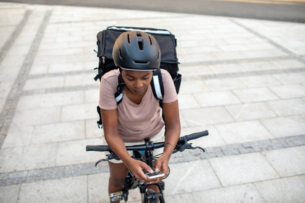
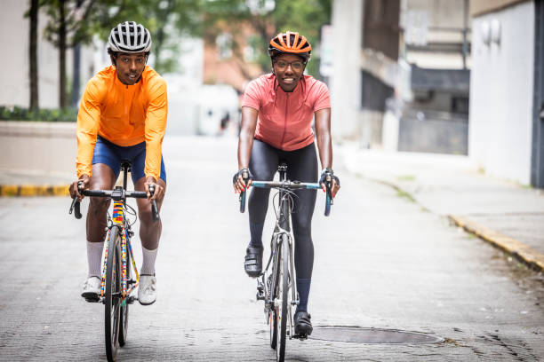
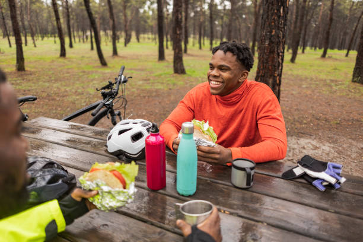
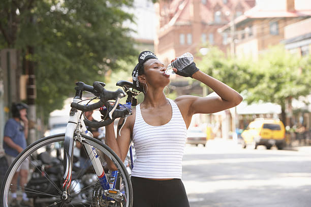
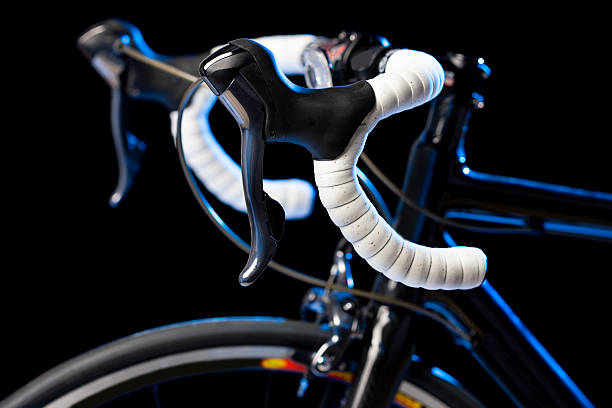
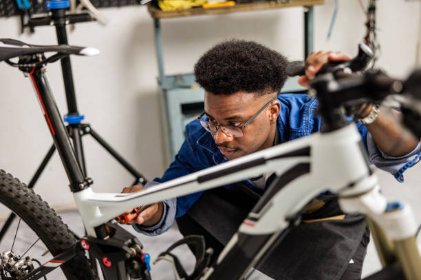
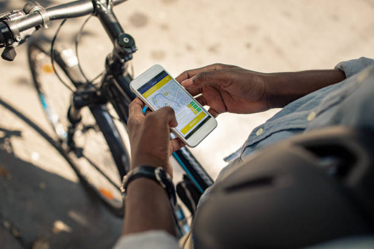

How To Win A Cycling Race
-
Have a Goal
The first thing to do when participating in a cycling race is to have a goal. Determine your objectives and your current abilities as a cyclist and tailor your goal to that.
Ensure your goals are realistic. If you are just new to cycling or its your first race, consider just trying to finish the race rather than wanting to make podium or win the race.
If you are more of a regular rider, focus on achieving a specific time, or beating your personal best for the same distance that you have ridden before.
You can compete for the first or other podium positions when you are sure of your strength and preparations as a cyclist.
Of course, everyone wants to win the race, but competing for a podium position as a beginner with a seasoned racing cyclist will only tire you out faster..or worse cause you to take unneccessary risks and crash.
Setting a goal that matches your profile as a cyclist will guide your training, preparation and your expectations.
-
Develop a Training Plan
Now that you have an idea of what you want to achieve in this race, the next thing is training.
Training is where you get to familiarise yourself with your riding style, your limits, and methods to improve yourself. If you are training for a race, each training session should have a goal. There are different types of trainings depending on their goals including
- Endurance trainings (where you ride for as long as possible),
- Interval training (where you practice holding particular speeds for some minutes),
- Strength training (where you practice your acceleration and sprinting), and
- Recovery days (where you decide on the best way to rest before and after a ride as well as the food you eat before and after a race).
Gradually increase the intensity and duration of your rides over time to become a faster and stronger cyclist. Ensure your training environment mimics the race environnment. You can train on the same road as the race for better results.
-
Nutrition
You are the engine of your bike. And the food you eat is your fuel for any ride. No one goes to a race with a car that is low on fuel. Therefore, you should not joke with your food when you are going to be riding or racing.
Focus on a balanced diet. But for a race you need to load the carbohydrates (carbs) for energy. Think foods like rice, eba, fufu some days before the ride. During the ride, think of quick energy sources, like bananas or glucose.
Since protein is for muscle repair rather than muscle strength, you should eat proteins after heavy training sessions and on recovery days and not necessarily during the race. Think eggs, fish and beans for protein sources.
Then, Hydrate. Hydrate. Hydrate.
Your muscles need water almost as much as they need food. And you are always going to sweat during a race. Therefore, you need to ensure that your
bodyengine retains the right amount of water to keep functioning effectively.Aim for clear or pale-urine days leading to the race to ensure that you have been drinking the amount of water. Take caution when hydrating during a race as too much water can mess with your electrolytes and do more harm than good.
Nutrition is as important as anything else if you want to be a cyclist, so if you want to dive deeper read more about nutrition here
-
Your Bike
The most important thing to win a cycling race after you and your muscles is your bike.
It does not matter how strong you are, if your bike does not look the part, you will find it hard to compete.
If you are racing on the road and want to win, a racing (road or gravel ) bike is your best bet to maximise your chances. If it is an off-road race, you need mountain bikes.
You will need to be extra-ordinary to win a road race with a mountain bike or to win a mountain race with a road bike.Ensure your bike is in top condition. Regularly check tires, brakes, gears, and lubricate moving parts. Wear a comfortable helmet, appropriate clothing like cycling jerseys, and cycling shoes. You can read our bike maintenace article if you need more details.
-
Practice Race Tactics
Understand the route of the race and develop your tactics along the route. Begin by asking questions like:
- Where will you sprint? Identify the sprint zones. Will you attack with a breakaway?
- Where are the hills at? Sharpen your climbing skills. How will you tackle the hills?
- Where are the corners at? Will you be cornering at speed or playing it safe?
- Will you draft? Drafting can help you save energy. Who will you draft? Identify people who will you to draft.
-
Prepare for the Race day
Arrange the things you will need, plan your transportation, accommodation, and nutrition.
How will you get your bike to the venue? Are you driving or riding there? Make sure you arrive at the race venue early to avoid any last-minute stress. Warm up to get your muscles ready for the challenge.
Bring your nutrition bottles, energy drinks, bananas and other foods. Plan how you will carry them during your ride.
Check the weather forecasts beforehand. Knowing how the weather will be can give an edge over the other racers.
-
Prioritise Safety
There is nothing more unfortunate than preparing for a race only to crash or bottle your lead at the end. Injuring yourself and other cyclists in the process.
Therefore, it is important to prioritise safety. Observe the traffic rules. Learn how to ride safely in a group. Do not endanger other cyclists in your quest to win.
All in all, winning a cycling race is just like winning any competition. Make sure you prepare very well, by training consistently and having a defined tactic. The tips we have provided here should guide you. Good luck with your cycling race.